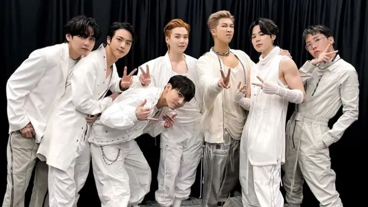

Conhecimento sobre BTS
Por:Ana Vitória Francisco da Silva
Boas-vindas ao meu novo blog! Aqui vou compartilhar sobre o começo da história deles dês do começo.
O BTS (Bangtan Sonyeondan) é hoje o maior fenômeno musical do planeta, mas a sua jornada começou de forma muito humilde em uma empresa quase falida.
A formação (2010): O produtor Bang Si-hyuk, dono da pequena gravadora Big Hit Entertainment, decidiu criar um grupo de hip-hop. RM foi o primeiro membro, seguido por Suga e J-Hope. Posteriormente, Jin, Jimin, V e Jungkook completaram a formação
O significado do nome: Bangtan Sonyeondan significa "Escoteiros À Prova de Balas", com o objetivo de proteger os jovens dos preconceitos e das cobranças da sociedade.
O Debut (2013): Em 13 de junho de 2013, o BTS estreou oficialmente com o single "No More Dream", criticando abertamente o sistema escolar coreano. Na época, por serem de uma empresa sem dinheiro, eles enfrentaram muita rejeição e falta de espaço na TV.
O amadurecimento (2014): Lançaram álbuns como Skool Luv Affair e o primeiro álbum de estúdio Dark & Wild, começando a construir uma base sólida de fãs chamada ARMY.
A era da virada (2015): Com o álbum The Most Beautiful Moment in Life, Pt. 1 e o hit "I Need U", o BTS conseguiu sua primeiríssima vitória em programas de música coreanos. Suas letras passaram a focar na dor, beleza e ansiedade da juventude.
A consolidação (2016): O álbum Wings e a música "Blood Sweat & Tears" estouraram globalmente, rendendo ao grupo o seu primeiro Daesang (o prêmio principal do ano na Coreia).
Conquista dos EUA (2017): O BTS se tornou o primeiro grupo coreano a ganhar um prêmio no Billboard Music Awards (Top Social Artist), quebrando a hegemonia de anos de Justin Bieber.
A era Love Yourself: Com a mensagem de amor-próprio, o grupo fez parcerias com grandes nomes ocidentais (como Steve Aoki e Halsey) e discursou na Assembleia Geral da ONU.
Estádios lotados (2019): Eles se tornaram os primeiros artistas asiáticos a esgotar o lendário estádio de Wembley, em Londres, consolidando seu status de superestrelas mundiais.
Domínio total com "Dynamite" (2020): Para consolar os fãs durante o isolamento da Covid-19, lançaram seu primeiro single totalmente em inglês. A música estreou em #1 na Billboard Hot 100, um feito inédito para um grupo sul-coreano.
Indicações ao Grammy: O grupo recebeu indicações seguidas ao Grammy e entregou performances históricas na premiação.
O anúncio de hiato (2022): Após o lançamento da coletânea Proof, o grupo anunciou uma pausa nas atividades coletivas para focar em projetos solo e cumprir o serviço militar obrigatório na Coreia do Sul.
Carreiras solo de sucesso: Todos os 7 membros lançaram álbuns individuais aclamados, quebrando recordes próprios nas paradas globais.
O Exército: Entre o fim de 2022 e o final de 2023, todos os membros se alistaram no exército sul-coreano. Jin e J-Hope foram os primeiros a concluir o serviço obrigatório.
O Futuro: O grupo planeja um retorno triunfal com os 7 membros juntos para uma nova era global.
O BTS ensina, acima de tudo, a amar a si mesmo, a importância da resiliência diante dos obstáculos e o valor da empatia. Suas músicas e mensagens abordam abertamente a saúde mental, superação de inseguranças e a construção de uma rede de apoio mútua.